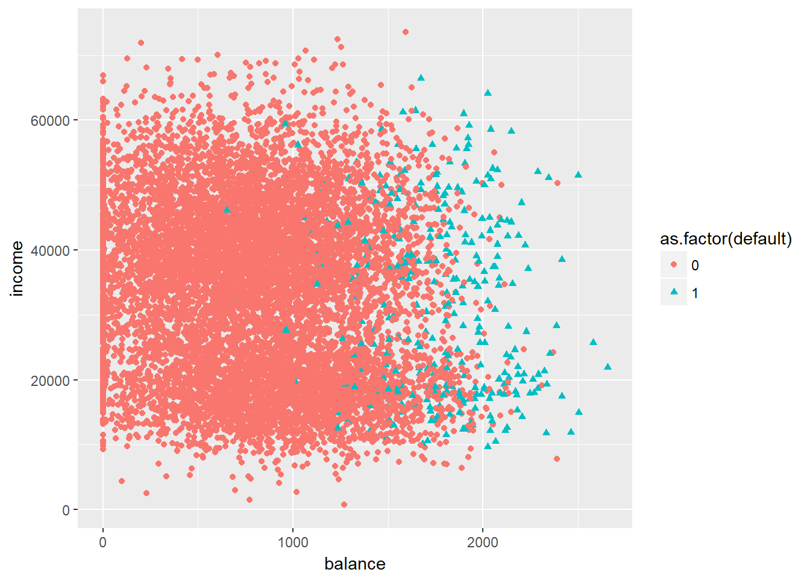

Logistic regression is used when our response variable is qualitative, in particular it is assumed to be bernullian \(Y_i \sim Bernoulli(\mu_i)\). This means that the variable can assume the value of 0 or 1.
For the analysis we will use the dataset Default from the ISLR package 1. The dataset that contains customer default records for a credit card company.
library(ggplot2)
library(ISLR)Logistic regression models the probability that \(Y\) belongs to a particular category. The hypothesis is defined as follow 2:
\(h_\theta(x) = g(\theta^Tx)\)
Where function g is the sigmoid function. The sigmoid function is defined as:
\(g(z) = \frac{1}{1+e^{-z}} = \frac{e^z}{1 + e^z}\)
sigmoid <- function(z) {
g <- 1 / (1 + exp(-z))
return(g)
}To measure the performance of the model, we use cost functions, that are a measure of how badly a model is predicting our response variable. The logistic regression cost function is:
\(J(\theta) = \frac{1}{m} \displaystyle\sum_{i=1}^{m}[-y^{(i)} \log(h_\theta(x^{(i)})) - (1 - y^{(i)}) \log(1 - h_\theta(x^{(i)}))]\)
costFunction <- function(theta, X, y) {
m <- length(y)
J <- 0
J <- 1/m * ((t(log(sigmoid(X %*% theta))) %*% (-y))
- t(log(1 - sigmoid(X %*% theta))) %*% (1 - y))
return(J)
}The gradient of the cost function is the derivative of it. Gradient is used to minimize our cost function as it represent its slope.
gradient <- function(theta, X, y) {
m <- length(y)
grad <- rep(0, length(theta))
grad <- 1/m * t(X) %*% (sigmoid(X %*% theta) - y)
return(grad)
}We upload the data and we convert into matrix because we are going to use vectorization for our calculation.
data(Default)
Default$default <- ifelse(Default$default == "No", 0, 1)
X <- as.matrix(Default[, 3:4])
X <- cbind(matrix(rep(1, nrow(X))), X)
y <- Default[, 1]
ggplot(Default, aes(x = balance, y = income, color = as.factor(default), shape = as.factor(default))) + geom_point()
The data shows defaults depending on balance and income. In order to obtain our thetas, we are going to use the built-in optimization function in R. We provide the initial values of theta (in this case all 0), the cost function to minimize and our gradient. We then select a minimization method.
initial_theta <- matrix(c(0, 0, 0))
theta_optim <- optim(par = initial_theta, fn = costFunction, gr = gradient, X = X, y = y, method = "BFGS")This is the decision boundary of logistic regression that corresponds to the probability of 0.5
ggplot(Default, aes(x = balance, y = income, color = as.factor(default), shape = as.factor(default))) + geom_point() + geom_abline(slope = (-theta_optim$par[2] / theta_optim$par[3]), intercept = (-theta_optim$par[1] / theta_optim$par[3]), colour = "blue", size = 1)# theta_optim$par
# https://stats.stackexchange.com/questions/6206/how-to-plot-decision-boundary-in-r-for-logistic-regression-model
# http://rstudio-pubs-static.s3.amazonaws.com/320280_2a9e44636b3a4f75a7dc02bf0b167572.htmlPrediction: For a student with scores 45 and 85, we predict an admission
sigmoid(c(1, 2000, 40000) %*% theta_optim$par)## [,1]
## [1,] 0.6418613prediction <- sigmoid(X %*% theta_optim$par) >= 0.5
mean(as.integer(prediction) == y) * 100## [1] 97.37